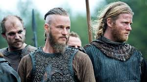

Una web dedicada a la mitología Vikinga
Día a día estamos ampliando CosasVikingas.com con nuevos contenidos. Nuestra meta es reunir toda la información sobre vikingos en una sola web. Se trata de información contrastada y bien documentada para desterrar prejuicios y mitos urbanos sobre la civilización vikinga. El estereotipo de los vikingos como un pueblo bárbaro dedicado al pillaje sigue estando muy extendido. Además de sus archiconocidos saqueos, los antiguos nórdicos destacaron por ser excepcionales navegantes e innovar en la fabricación de armas. Por otro lado, contaban con una rica mitología plasmada en las sagas. Todos estos aspectos son los que iremos detallando en esta web poco a poco.
¿Quiénes eran los Vikingos?
Los vikingos fueron un conjunto de pueblos del Norte de Europa que han pasado a la historia
por dos motivos. En primer lugar, por sus saqueos por todo el continente. En segundo lugar, por sus pioneros
viajes hasta América. Tenían una religión politeísta y unos rasgos culturales que contrastaban con la tradición
cristiana.
Al tratarse de una civilización prácticamente ágrafa, existen muchas lagunas en la historia de los vikingos.
La escasez de registros escritos se une a los estereotipos y prejuicios creados por las víctimas de sus ataques.
Una breve cronología de la Era Vikinga
La conocida como Era Vikinga tiene lugar entre los siglos VIII y XI. Se integra dentro de
la Edad Media, en una época en la que las tribus que invadieron el Imperio Romano de Occidente ya se habían
convertido al cristianismo y fundado diversos reinos. Al mismo tiempo, los musulmanes habían expandido su dominio hasta la Península Ibérica y todavía existía el Imperio Bizantino.
Los vikingos son descendientes de las tribus germánicas. La época vikinga acota la actividad de estos clanes nórdicos desde que entraron en la escena europea con el ataque al monasterio de Lindisfarne en el año 793.
A partir de entonces, sus sucesivas incursiones fueron cada vez más ambiciosas, atacando grandes ciudades como París o Roma y adentrándose por territorios lejanos como la Península Ibérica o el Imperio Bizantino. Además de practicar el pillaje, estos nórdicos fundaron colonias al norte del Océano Atlántico e intentaron conquistar Inglaterra, entre otros territorios.
El final de la época vikinga se produce con la cristianización de los vikingos, proceso que arranca en el siglo XI. Al mismo tiempo, la región escandinava se va unificando hasta conformar los reinos de Dinamarca, Suecia y Noruega.
Países de origen
Los vikingos se pueden clasificar en tres grupos principales:
- Daneses. El grupo geográfico de vikingos con mayor población. Su ubicación entre el Mar del Norte y el Báltico les permitía controlar las rutas comerciales. Destacaron por tener una sólida organización militar.
- Noruegos. Afamados navegantes, controlaron el Mar del Norte y fueron estableciendo colonias en Islandia, Groenlandia y Vinlandia. En sus inicios se dedicaron a comerciar, pero más tarde pasaron a organizar numerosas incursiones para conquistar tierras.
- Suecos. Pusieron su foco de operaciones en Europa Oriental y navegaron a lo largo de toda Europa. Los conocidos como varegos se adentraron en Rusia y algunos llegaron a establecerse en el Imperio Bizantino.
Sociedad y cultura vikinga
La sociedad vikinga estaba estructurada en varios estamentos o castas, con muy poca movilidad social. Fundamentalmente podemos hablar de nobles, guerreros, hombres libres y esclavos.
- La nobleza constaba de holds y jarls, que eran vasallos de un rey.
- Los guerreros tenían un peso muy importante en la sociedad nórdica. Eran escogidos por el pueblo.
- El resto de hombres libres comprendía a los campesinos y los artesanos. Junto a los guerreros, conformaban la asamblea local y tenían derecho a llevar armas.
- Los esclavos o thralls eran el estamento más bajo. No tenían derechos y eran propiedad de sus amos. Procedían de los saqueos en tierras lejanas, aunque una persona y su descendencia podían convertirse en esclavos por cuestiones de deudas.
.jpg)
En esta organización social destaca el rol de la mujer, que gozaba de mayor libertad que en las civilizaciones cristiana y musulmana. Aunque se trataba de una sociedad marcadamente patriarcal, las mujeres podían solicitar el divorcio y se hacían cargo de las granjas en ausencia de sus esposos.
De la cultura de estos pueblos escandinavos destaca la producción de sagas. Estos relatos eran transmitidos oralmente hasta que se escribieron en torno al siglo XIII. Normalmente hablan de las proezas de reyes y aventureros con un enfoque mitológico.
El idioma que se hablaba en la época era el nórdico antiguo, que constaba de un alfabeto rúnico. Esta lengua es la antecesora del sueco, el danés, el noruego o el islandés.
La religión vikinga era politeísta, con un gran abanico de dioses y diosas. La mitología nórdica es rica en personajes sobrenaturales y héroes que protagonizan mitos.